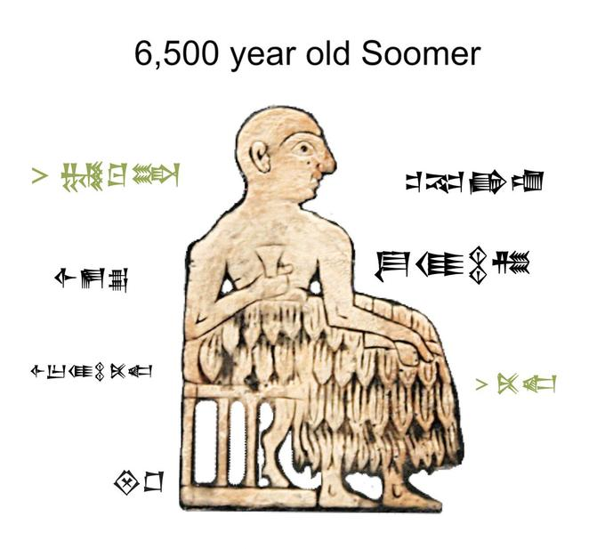

Radical theory, from at least the time of the enlightenment, and maturing in the age of Marx and Engels, has been veritably obsessed with a notion of linear history and progress. The general idea is that if one can learn something of the general rules of history, assuming that history has rules, then one can make predictions about the future. This is an idea with some clear validity, as an understanding of the past surely influences and directs our actions in the present, thereby creating futures.
Technology is another great preoccupation of many radical theorists and bears a close relationship with notions of linear progress and the rules of history. It’s extremely easy to imagine the development of technology as a linear force unto itself, given its position of gargantuan fetishism within our society and culture. It is very obvious to the so-called modern person that the horse and cart of one hundred years ago is inferior to the BMW of today. By free association, the modern person then concludes that the one who rode the horse and cart to market lacked the modern sensibility, intelligence and progressive virtues of the one who drives the BMW to the office.
This is, of course, nonsense. By all scientific measures the modern person is, in no qualitative or important sense, different to the person who lacked the convenience of the combustion engine or the protection of antibiotics. The so-called modern human had acquired most of their essential features by 300,000 years ago, according to recent discoveries at Jebel Irhoud, and there has been no statistically significant advancement in human cognitive capabilities for, at least, 60,000 years. In fact our brains have gotten smaller in the last 12-15,000 years, although whether or not that is indicative of any effect on intelligence is controversial.
I find it extremely interesting to consider the way that innovations in technology shape our cultural perceptions of history, society, and ourselves. This is an unmistakable pattern in the general contours of social and cultural history, from prehistory down to today. Emerging elites have often identified themselves with power through association with new technologies, a phenomenon increasingly prevalent in contemporary western societies since at least the 1990s. Not only do these innovations upset equilibria of social power and drive class struggle and upheaval, they also, like the Seleucid calendar, come to influence the basic precepts, such as time, through which we view the world.
To me, an extremely interesting case in point is the ledger, the technological means by which people record and take stock of transactions of material resources, property and money. In my opinion, the idea that accountants are boring people is a great and conspiratorial lie concocted to obscure the crucial role that this kind of bureaucrat plays in constructing the very realities in which we live. More than ever, perhaps, in the era of finance capitalism, the accountant is a great person of history- the strokes of their pen can consign thousands of lives to privilege or poverty, their machinations and failures make and cripple nations.
The very first ledgers emerged in Sumer, modern southern Iraq, around five and a half millennia ago. The new accounting technology was an evolution and abstraction of counting technology. As is explained wonderfully in this video, a technology of quantifying things was developed from the neolithic onwards whereby one made small models of the thing they were counting out of clay, an abundant resource in a country which is essentially a giant floodplain bordered by two great rivers and the ocean. For example, to record that I owned sixteen goats, I would make sixteen tiny goat representations, and, thereby, would always know if one went missing. To track and quantify transactions between people, a small pocket of clay would be made, and the corresponding number of models would be sealed inside. That way, if there was a dispute over who owned what to whom, you could crack open the clay pocket and just count what was inside. Eventually, someone came up with the bright idea that you didn’t really need this to be a three dimensional affair- doing away with models and pockets you could just scratch little pictures of the resource being exchanged into a flat piece of clay.
This was, besides other things, the deep origins of what we now call writing. Eventually the little drawing of the goat became standardised and abstracted into a pictograph or ideogram meaning goat. We call this early form of writing Cuneiform. Over time, these primitive ledgers grew more complex and systematic as human ingenuity refined the process of their use. Instead of scratching sixteen goats into the clay, a system developed whereby you just scratched one, but then punched a number of holes beside it to indicate the quantity. For trust and transparency it was found that one needed to show the work of their calculations (so that they could be easily rechecked), and that it was useful to add dates, signatures and an authenticating stamp or seal. These basic features became the foundation of trust and exchange within economic life, and formed the basis of what is recognized as the world’s first urban culture and civilization.
In his book Debt: The First 5000 Years, the late David Graeber brilliantly charts the evolutionary downfall of the social currencies that predominate in, for lack of better terminology, simple societies, into the concepts of money and quantifiable debt that rule our lives today. Clearly ledger keeping, as it evolved in Sumer, was a crucial factor within this process. Counting, accounting and writing, which had been conceived to reflect and keep track of objects- the material reality around us- came to be seen as somehow more important than this. The written words and numbers recorded on the ledgers came to be seen as reality itself, and we began to manipulate matter in the favour of written words instead of writing to reflect matter. In a textual sense, we can speak of ledgers as performative documents- they do not simply reflect and record facts about reality, but are constituent to reality, the words with which they are inscribed effect and change reality through their very existence. In a material culture sense, we can say that ledgers are objects that exercise agency over human social realities by defining the parameters of what we have or have not.
While they might have been invented by farmers, ledgers became particularly crucial to the emergent class of merchants and long distance traders in the Sumerian world. Whether you were importing cypress wood from Lebanon, or Ivory from Dilmun, any trading enterprise that was staffed by more than a single person with exceptional memory required a means to document and authenticate transactions. Long distance trade of commercial scale was a new and emerging phenomenon in this period. Merchants’ control of access to exotic goods and materials was the locus of their increasing power in a rapidly growing and transforming society. The ledger, homophonous to the elite soldier’s sword, was the object through which they projected that power. Similarly, as the soldiers swordplay was the skill and technique through which they could exercise power, the merchant exercised theirs through writing.
I believe that a great part of the reason for this has to do with magic. Magic is a very real force in human relations, despite what unbridled rationalism might have to say, and it is inherent to our fascination with technology. It seems to be a natural reaction within humans that we view technical processes that we don’t understand as magical, and that we attribute great and incomprehensible power to those who control them. This explains both our veneration of the artist and the scientist. The brilliant anthropologist of art, Alfred Gell, said this in an essay;
“The enchantment of technology is the power that technical processes have of casting a spell over us so that we see the real world in an enchanted form.”
This goes some way to explaining the power that the Sumerian merchant might have wielded through writing. It’s also highly reminiscent of the way that financial processes are presented to the public today- as rocket science that we should not deign to question. If the guy in the suit (or robe as the case may have been) tells us that that’s what the fancy symbols mean, then I guess that’s just got to be it.. right?
The power of the ancient merchants represents an early kind of bureaucracy, a system in which writing and officiating with seals and stamps comes to dictate reality. This is not to deny the practical utility of the technologies- if you want to conduct complex economic actions and transactions you won’t be able to do it without tools of this sort. The ebb and flow of global trade networks and any other kind of long distance coordination happens, in part, on the back of innovations in ledger keeping technologies. This is equally as obvious from the history of double entry book keeping or modern fiat money as it is with the Cuneiform tablet. So do, however, states, empires and their incumbent barbarity. Powerful technologies will always have a relationship to power.
This brings us to today. At present it is essentially impossible to avoid the historical ripples (and predicted ripples) of a new ledger keeping technology- blockchain. Blockchain, and its manifestation in Cryptocurrencies, has been an absolutely unavoidable topic of discussion over the past year. I even get regular notifications about it on my phone these days from a banking app. This hegemonic quality has existed, in part, because we’ve all been stuck inside, going insane as the world as we know it appears to end. But that is just a catalyst of the myth making and enchantment occurring around this new technology, not a cause.
I’m not going to try and explain how blockchain works, essentially it
does all the same things earlier ledgers did, but it is now able to authenticate
itself without reference to any central authority- cryptography plays the role of
signature and stamp seal on a Cuneiform tablet. In theory this allows you to
have a decentralized economy, which might or might not be a good thing
depending on who you ask.
I’m also not going to tell you that blockchain is bad. It’s just a
technology, it’s moral worth is dictated by how it is used and its value by its
usefulness.
What I am going to suggest is that it hasn’t really proven itself to be very useful yet for anything other than the reproduction of power. The directional and organizational capacity of ancient ledger keeping technologies clearly facilitated and catalysed useful and productive economic activities. Cuneiform tablets helped Sumerian merchants to import wood, a very useful material, into Mesopotamia, a region lacking in forests. Ledgers were also key to the organisation of mass work forces to complete productive economic improvements such as building irrigation canals and expanding the food base and population capacity of a society.
Thus far cryptocurrency and blockchain seem to have productive and commercial function in illicit spaces and blackmarket activities- I’m personally not so worried about people buying yokes and weed off the dark web but the reports of hit men and human trafficking are much more odious. Aside from this it solely seems to function as a highly volatile asset that can be gambled on, mostly by people who are already powerful and wealthy. What’s more, this roulette wheel seems pretty clearly rigged when you take notice of the way the trade value of Crypto seems to swing upward and downward in direct proportions to the richest guy in the world’s tweets.
I think it's perfectly conceivable that at some point in the future blockchain technology might find a genuinely useful application, but for now it’s pretty much smoke and mirrors as far as I can see. Ledger keeping technologies are clearly a pivotal nexus of human power relations and their evolution can certainly change the world- but the ideological statements of libertarian decentralization that seem so attached to the technology’s public image seem quite stretched to me. If anything, the most likely course of future events surrounding crypto is that it will help to further embed the same old aristocracies, maybe with a few new faces thrown in for good measure, into positions of central power. If history is our guide then we can say that modern decentralized economies emerge when there’s a civil war or some other circumstance that effectively forces the state to up stakes and leave. This was true in Makhnovia in 1920, Spain in 1936 and Rojava today. Ledger keeping technologies, if they do anything, reproduce centralized power, and I have a hard time believing that that’s going to be just because of digital lego.